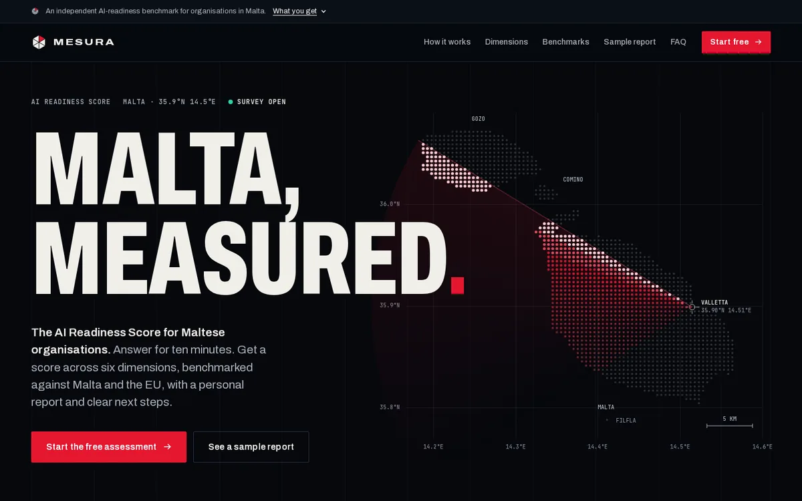
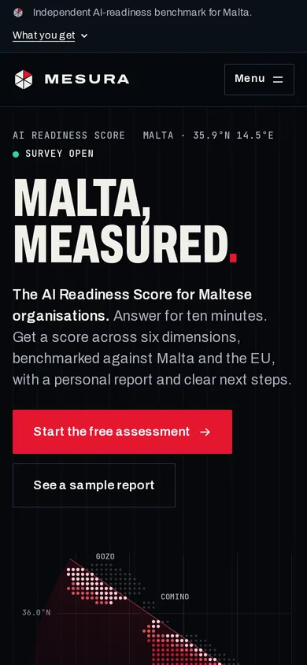
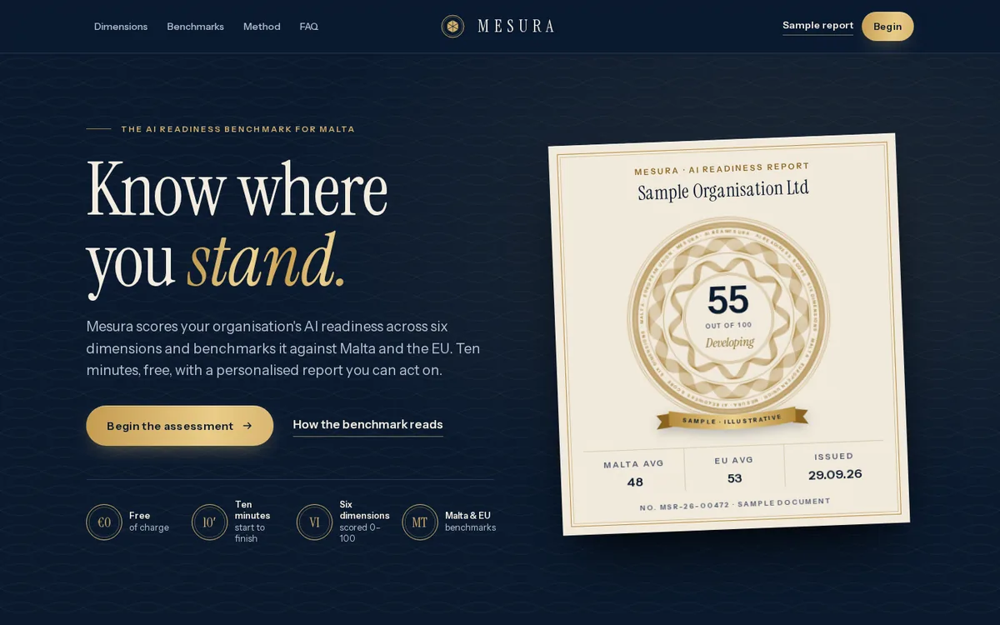
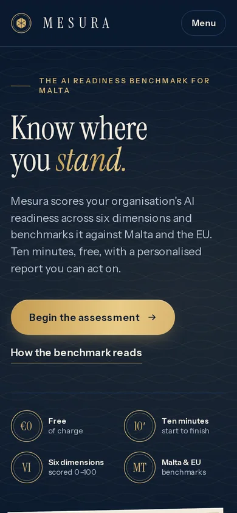

Prototype set v1 · 29 September 2026 · for discussion
Three ways into Mesura.
Mesura is Malta's AI Readiness Score: a free, ten-minute survey that scores an organisation across six dimensions, benchmarks it against the Malta average and the EU, and returns a personalised report with next steps.
The homepage has one job: get a Maltese leader to start those ten minutes. Each direction below does that job in a different voice, borrowing from the design language of the new US federal sites (Tech Force, NASA Force, Genesis, TrumpRx and America.gov) and rebuilding it for Malta.
All three are working prototypes, not mock-ups. Each opens as a single HTML file. Press Design notes in the bottom-left bar of any prototype to see the reasoning pinned to the page.
- Audience
- Leaders and teams in Maltese organisations
- Primary action
- Start the free assessment
- Proof points
- Free · ~10 minutes · six dimensions · Malta & EU benchmarks · report
- Operator
- SeyTravel Ltd · support@mesura.ai
Research note: this environment couldn't load mesura.ai or the reference sites directly, so the analysis draws on their public descriptions and press coverage. Dimension names, benchmark figures and privacy wording are placeholders to confirm.


Mission
AI readiness as a national mission. Night canvas, poster-scale condensed caps, and Malta itself drawn as a live instrument display.
- Voice
- Urgent, declarative. "Malta, measured." "Ten minutes to your score."
- Type
- Archivo, condensed to 62% width · JetBrains Mono for readouts
- Palette
- Signature
- Dot-matrix Malta scanned from Valletta; a T-minus clock that counts down as you scroll; a pinned radar instrument
- Borrows
- techforce.govnasaforce.govgenesis.energy.gov
Best if
Mesura wants to feel like a movement, and to be talked about.Watch out
The loudest option. Poster type needs short, disciplined copy to work.mesura/a-mission.html · {{kb:a-mission}} KB


Standard
Mesura as the trusted benchmark. Navy and gold, a serif voice, and the report treated as a document worth keeping.
- Voice
- Measured, assured. "Know where you stand." "Take your measure."
- Type
- Instrument Serif for display · Instrument Sans for everything functional
- Palette
- Signature
- A guilloché seal engraved live on canvas, like banknote security printing; hallmarks; a brass lobby directory for the six dimensions
- Borrows
- trumprx.govamerica.gov
Best if
The buyer is a board or C-suite, and credibility matters more than buzz.Watch out
The seal must never read as a certification. The ribbon says "Sample" and the FAQ says so.mesura/b-standard.html · {{kb:b-standard}} KB
Front Door
The homepage is the first question. Three answers in the hero produce a live first read; everything after is bright, plain and well signed.
- Voice
- Friendly, plain language. "How ready is your organisation for AI?"
- Type
- Bricolage Grotesque for display · Geist for UI · Geist Mono for data
- Palette
- Signature
- A three-question quick read with a partial radar; a working sample report with tabs; an EN/MT language switch
- Borrows
- america.govgenesis.energy.gov
Best if
Conversion is the goal: the quickest route from landing to starting.Watch out
The quick read must stay honest about being rough. Its copy says so, and the full score only comes from the survey.mesura/c-front-door.html · {{kb:c-front-door}} KB
What each reference lent.
The National Design Studio's sites share a language: short declarative headlines, one idea per screen, premium civic palettes and a single front door. These are the specific moves borrowed, and where they landed.
techforce.gov
Recruiting-poster confidence. An "elite corps" framing, the programme facts up front, one clear call to apply.
Used in A
nasaforce.gov
Work framed as missions and projects. No forms on the page, so the site only has to get you to click.
Used in A
genesis.energy.gov
Instrument-grade precision, icons for each domain, a continuously scrolling carousel of collaborators, and a stated accessibility approach.
Used in AC
trumprx.gov
Navy, cream and gold with a serif wordmark, a gilded crest with a scroll, and the product shown up front.
Used in BA
america.gov
The conversational front door: ask in plain language, get answers linked to sources. Gebbia's idea of the site as a lobby with good signage.
Used in CB
Keep the ambition. Raise the bar.
Press coverage of the federal sites praised their polish and flagged what sat underneath it. These prototypes take the look and set a measurable standard for the rest.
Shared foundations.
The directions differ in voice, but they rest on one content model, one set of dimensions, one mark and one colour logic for benchmarks.
Six dimensions (proposed)
Placeholder names to confirm against the real survey.
- Strategy & leadership
- Data
- Technology
- People & skills
- Governance & risk
- Adoption & culture
The hexad
Six wedges, one per dimension, with one lit in each direction's accent. Scale each wedge by its score and every report gets its own mark.
You, Malta, the EU
Every benchmark chart uses three marks that differ in both shape and colour, so colour is never the only cue. Each set was validated for colour-blind readers against its own background.
● You▮ Malta average◆ EU average
For our discussion.
The quickest way forward is to react to these. Mixing parts is normal: A's hero with C's quick read, or B's report treatment inside C.
- Which direction feels most like Mesura?Or which parts of each should we combine?
- What are the six dimensions really called?The prototypes use proposed names.
- How are the benchmarks built?Can we show real Malta and EU figures, with sample sizes?
- Are there separate paths for individuals and organisations today?Two directions assume there are.
- Which brand assets stay?Logo, colours and type. The hexad is a proposal.
- What can we promise about data?Storage, anonymisation, and whether there's any sales follow-up.
- Is a bilingual site wanted?Concept C's Maltese copy is a draft for native review.
- Should the report seal become a shareable badge?Only if Mesura wants to stand behind it as a credential.
Data used on the pages
- Eurostat, December 2025: 46.5% of people in Malta aged 16–74 used generative AI tools in 2025, third in the EU; EU average 32.7%.
- PwC Malta AI Business Survey 2024: 75% of organisations have no AI governance framework; 56% have no one assigned to assess AI use cases.
- Malta and Gozo coastlines: Natural Earth 1:10m (public domain). Fonts: Archivo, JetBrains Mono, Instrument Serif and Sans, Bricolage Grotesque, Geist (SIL Open Font License).
- All scores, sample reports and Malta/EU averages shown in the prototypes are illustrative.